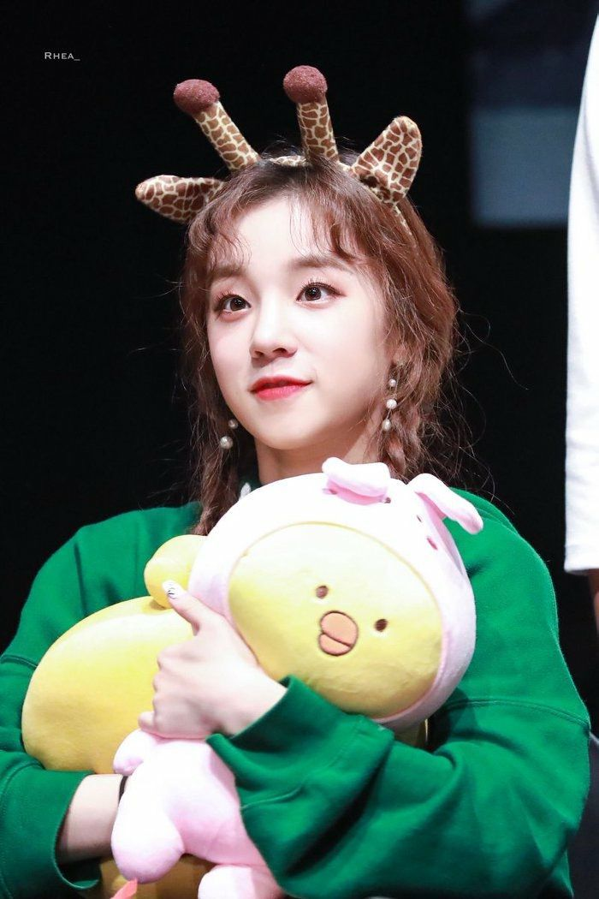

송우기
송
우
기
송우
기
에 대한 나의 생각
기
도 안 약하면서 매번 져주고 나쁜 마음 먹지도 않고 그러면서 비전도 있고 긍정적이고 어떻게 사람이 그럴 수 있어?!
송우기는 정말 사람인가?? 신이 아닌가? 어쩌구 저쩌구 송우기를 감히 내가 현 세상에 존재하는 개념으로 설명하는 것은 무엄한 행위. 
This is some text in a paragraph.
송우기는 혁명